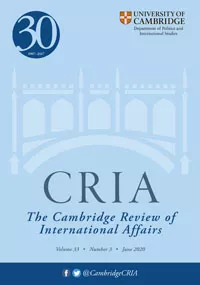

收录于合集
作品简介
【作者】 凯瑟琳·琼斯（Catherine Jones），圣安德鲁斯大学国际关系学院讲师，主要研究在亚洲崛起的背景下，日益增长的物质权力能力与规范转变之间的关系。
【编译】 阮含含（国政学人编译员，辽宁大学国际关系学院）
【审核】 丁伟航 郭新靓
【排版】 梁鑫昱
【来源】 Catherine Jones (2020) Contesting within order? China, socialisation, and international practice, Cambridge Review of International Affairs , 33:1, 105-133, DOI:10.1080/09557571.2019.1674781

期刊简介

Cambridge Review of International Affairs （《剑桥国际事务评论》）于1985年创立，是国际关系同行评审学术期刊，以季刊形式发行。由剑桥大学国际研究中心（现隶属于牛津大学政治与国际关系学院）编辑，Routledge出版。该刊2018年的影响因子为0.656.
在秩序中竞争？中国，社会化和国际实践
Contesting within order? China, socialisation, and
international practice
Catherine Jones
内容摘要
关于中国参与国际机制的争论焦点是一种（错误的）二分法，即中国要么是维持现状的大国，要么是修正主义大国。这场争论的双方都有足够的经验证据来支持他们的论点，而且他们倾向于得出这样的结论，即中国的行为和偏好介于这两种立场之间。需要重点考虑的是中国如何通过国际机制挑战国际秩序。本文研究的问题是：什么正将中国社会化？在分析国际实践研究文献的基础上，本文剖析了中国可能社会化的规范类型。本文认为中国已经成功地融入了国际机制的实践（官僚机构的运作及实现其政治目标的方式）和自由多元主义的全球规范，但尚未完全认同社会连带主义者的自由规范。
文章导读
01
**导论
**
国际机制不仅可以作为维持国际秩序稳定的媒介，而且还是一个供各个行为体对规范、共识和惯例进行辩论的论坛。而现今，各国在国际机制结构内修正国际秩序的潜力仍未得到充分研究。在研究中国在国际机制内部重塑国际秩序的能力问题上，学界提出的问题在于中国是否保持了“现状”，是否已经“社会化”以适应国际规范，其自身的行为是否与已经建立的制度相一致，或者中国本身是否已经成为了规范的制定者而不是规范的接受者。然而，这些研究倾向于认为中国与国际(自由)规范的关系处于接受和拒绝之间，强调变化是渐进的。而今至关重要的是，通过寻找出现变化的替代位置来扩展和深化这些结论，并探索前人研究中出现的问题。
本文提出， 中国通过国际实践层面参与全球秩序(特别是国际机制)一直被忽视了。 实践和官僚约定可以将国际规范推向不同的方向，这些互动既不会因中国政府的意图而进行，也不会被视为官员越界。但是，通过与这些做法的接触，中国有可能温和地修改、而不是彻底改变指导国际行为的现有规范。本文以中国参与对朝鲜制裁为例，论证了研究方法发展的现实意义和重要性。
总的观点是，中国已经接受了一些关于制裁的国际实践（二阶规范 (second order norms)）。中国已经了解了联合国官僚机构的运作过程，通过这一过程，中国可以获得对国际规范的解释权，将其战略从被动的讨价还价转向主动的辩论。在制裁朝鲜的背景下，意味着要利用专家小组（负责监测执行情况并提出使制裁更加有效的建议）和制裁委员会（除其自身的知识和专长外，还寻求根据专家小组的建议采取行动）。然而，这并不表示中国接受了不扩散就要接受通过制裁执行它。相反，在提到这些元规范（meta- norms）以及它们之间的联系时，我们看到了中国的做法中的细微差别，即可以接受制裁行为以表示支持不扩散规范（因此有证据表明，中国已经接受了这一规范），但是，中国参与二阶规范来减轻以制裁方式约束朝鲜的有效性，这表明，它还没有将利用制裁实现这些目标社会化。
02
社会化与国际规范
社会化
根据亚历山大·温特的说法， “社会互动在某种程度上是相互调整的因果过程，往往会产生意想不到的结果。” 而学界关于什么是社会化，是过程还是结果展开了辩论。在关于中国融入国际规范的研究中，大多数学者主要是探索中国是否已经接受了观念上的规范——即认为社会化是一种结果。然而，本文在“什么正将中国社会化？”这个问题的基础上提出新的问题，即存在不同类型的规范。因此，通过区分不同类型的规范(见下文)，中国可能采用了非 元概念(meta-idea) 的行为模式。因此，中国可能是“薛定谔”的社会化——既社会化了，也没有社会化。为了进一步扩展这个论点，首先有必要详述与社会化概念相关的不同类型的规范。
国际规范
一般而言，规范是主体间的事实，具有上下文关系，但强度各不相同。它们提供了适当行为模式的组织原则，但没有提供有关如何进行该行为的具体细节。因此，规范提供的一般原则通过在机构内部的形式化而具有特定的含义。
根据 赫德利·布尔（Hedley Bull）的说法，规范可能是一阶（first order）的（指导思想）又是二阶（second order）的（功能/工具）。 相比之下，二阶规范可以看作是与过程相关的规范。根据“规范”一词本身的社会学渊源，国际机构内外交官和官僚的行为模式也可以被视为国际规范。考虑到基于理念的规范、国际机构和国际实践之间的关系，机构的日常规范可能成为规范竞争和国家社会化的平台。因此，实施理念、规范和原则的程序被视为规范变更的场所。这些规范可以被认为是二阶规范。
在将社会化视为一种结果和过程时具有根本性区别。在考虑二阶规范（作为功能性、行为性过程）时，结果是过程的发展、接受和参与。就一阶规范而言，其结果是对共同理念或总体目标的接受，无论是基本规范还是补充规范。
03
规范、社会化、秩序和实践
在出现二阶规范时，重要的行动者是在国际机构内运作和参与的官僚和个人。为了研究这种相互作用，国际实践方法必不可少。就社会化的主张而言，出现了共同的过程、受管制的和模式化的行为，发展对规则的共同解释就是这一过程的结果。
在一阶规范即思想领域，涉及的行为体更具包容性，它们可能来自国家元首之间的高级别会议，然而，正如上文所指出的，这些规范可能通过与二阶规范过程相关的互动过程而改变其解释。因此，在关于社会化的辩论中，必须注意他国均认为一个国家正在认同且接受的规范。以中国对朝鲜制裁的方式为例，本文认为，中国已经接受与制裁有关的二阶规范进程。通过参与这一进程，中国能够改变一阶规范的核不扩散与使用制裁确保核不扩散之间的联系。因此，笔者认为，中国可能接受核不扩散，但不接受通过制裁来实现。它通过参与执行制裁进程来表明它不接受这些规范之间的关系。
04
采用国际实践方法-为何及如何采用?
该部分旨在勾勒出与“实践转向”通常相关的要素，以创建一个概念框架，通过该框架可以在制裁委员会和专家小组中分析中国的做法。
国际实践和国际秩序演变的动因
将最近的实践研究的成果与约翰·鲁杰（John G.Ruggie）和罗伯特·基欧汉（Robert Keohane）在国际秩序及其演变方面的成果放在一起，会发现其中有许多潜在的变革驱动力。在更广泛的秩序讨论中，重点是通过制定新规范或新方法来改变国际秩序。
制裁是一个非常有用的例子。作为改变被视为不适当行为的手段，制裁的使用已经跨越了多元主义和社会协作主义规范之间的边界。通过胁迫、释放信号或限制一个国家的行动而有见效。寻求改变诸如大规模杀伤性武器的发展之类的国家行为时，限制该国获取特定商品可能就能达到目的。但是，在寻求改变国家治理并为民众提供更好的保护时，如果对其胁迫并表明行为的不适当，制裁可能会更加成功。
的确，通过制裁的不同要素（强制和约束）来考察多种制裁程度时，中国所采用的不同类型的做法决定了制裁的运作性质，因此决定了制裁可以产生什么样的过程和行为改变。由于中国将重点放在限制特定商品的获取上，这限制了可以通过适用这些商品而受到惩罚或改变的行为类型。这表明中国已经社会化了与制裁有关的程序规范，但没有表明中国接受了制裁旨在制定的规范。
国际实践：社会化还是讨价还价？
这里讨论的问题是，中国在国际社会制裁朝鲜的行为，是一种讨价还价的做法，还是一种社会化的过程。在这一节中， 笔者提出，讨价还价和辩论是有效的，并且是在特定论坛中特有的，这证明了互动过程的社会化已经发生——参与的国家行为体已经学会了塑造组织理解的基于元规范的可实施行为，而中国的行为不仅是讨价还价的表现，也是中国社会化的标志。
根据德国著名国际关系学者米勒（Harald Muller）的说法，争论和讨价还价有明显的区别:辩论包含事实真相或规范性有效性的主张，并试图说服他方。讨价还价包含承诺和威胁，并有意改变自身行为。
在每一个交换中，发送者（辩论者或讨价还价者）都会将其部署为影响目标响应的工具。相比之下，在社会化研究中，研究对象是受影响的一方，如果一方受到了社会化进程的影响，他们可能会使用讨价还价或辩论的方式，但重点是当他们与采用不同方法的其他实体互动时，其规范、偏好或行动是否会在一段时间内被改变。在对讨价还价和辩论互动的基本理解中，重点是针对特定问题或实例的单一系列互动，他们根本不想调整接收者的参照体系（frame of reference）。然而，在社会化中，互动（可能包括讨价还价和争论）的目的是改变接受者的心态。
利用国际实践，研究人员可以更清楚地确定发送者是否改变了与他人交往的策略，但也可以理解这是否是因为他们的参照体系发生了变化——他们对恰当性逻辑的看法发生了变化——或者他们是否在为了追求同样的政策目标。就中国参与对朝鲜的制裁而言，这清楚地勾勒出了这些不同行动的潜在指标。
通过将不同的预期行动与辩论、谈判和社会化区分开来，我们能够更容易地了解中国在多大程度上已经或正在塑造机构内部的国际秩序。下面的行为大纲，将在结论中用来评估中国的行为类型或方法是否已经改变，或者是否已经被社会化，如果已经被社会化，这是一种不同的适当逻辑，还是一种更有效的行为形式。
辩论行为：
-
运用事实陈述案例
-
试图说服其他参与者认可其做法是“正确的”。
-
在适当的行动框架内，与其他参与者合作提出论点。
讨价还价行为：
-
使用威胁或承诺来改变其他行为者的政策偏好。
-
缺乏对“权利”或规范性的讨论。
-
试图在他人使用威胁的行为中积极指出后果。
执行制裁程序的二阶规范社会化的证据：
-
改变对同一案例的讨价还价或辩论。
-
政策或行为在一段时期内发生变化。
-
在相当长的一段时间内，同一个体就同一话题进行持续的互动。
研究方法与途径
通过对实践进行相对一致的理解，定义为运用一些背景知识并在社会环境中的话语和物质行为中被证明是能够胜任的表现，可以将制裁设计理解为一个持续的过程，而不是单个的过程的实例。制裁实施和规范化的实践需要包含四个关键要素：
1.一个社会团体，其成员有明确的界限，并始终相互作用（通过共同努力或重叠的活动，或通过对共同活动有共同解释的叙述）；
2.对特定实践的集体知识共享；
3.团体（单独或集体）开展的相关活动模式；以及
4.使用或创建实体对象。
05
案例分析:中国与对朝鲜的制裁
中国在2005年介绍联合国改革的白皮书中强调了其政策，即制裁只能在万不得已的情况下使用，并由联合国安理会实施。从表面上看，中国已接受制裁的使用，并且在适当的保障措施下，制裁可用于发出信号，约束或胁迫目标国家改变其行为。但是，这项政策的第二个要素—严格遵守—是中国立场变动的空间，即中国对制裁行为的定义。
因此，在本案例中令人困惑的是中国在制裁方面的规范偏好及其国际实践。无论是支持还是反对中国的国际社会化的主张都可以利用此案来支持他们观点。从中可以探索在更广泛的国际制裁制度以及联合国专门针对中国进行社会化处理的联合国机构内的特定做法。
中国的行为先于社会化，先于争论和讨价还价的规范
中国与国际机构的交往经历了发展和逐步融入的过程。因此，中国的行为没有一个明确的转折点。就制裁朝鲜而言，这个转折点也是很难确定的，因为最近一轮制裁是在2006年核试验之后才开始的。
从上世纪90年代直到2002年（朝鲜在2003年退出《不扩散核武器条约》之前），联合国安理会讨论了如何管理日益强硬的朝鲜而中国（和俄罗斯）非常反对联合国制裁的趋向。中国不仅不赞同将制裁作为一种强制手段，而且还反对以制裁的方式对朝鲜随后退出《不扩散核武器条约》(NPT)表示不满。在这个阶段，中国并没有在国际机构内辩论或讨价还价，而是阻止各种选择被摆上谈判桌。2006年，在朝鲜进行了核武器试验后，中国不仅允许讨论制裁问题，还在联合国安理会就此事举行的会议上投票赞成实施制裁。因此，这种参与是中国辩论和讨价还价过程的开始。
在下一节中，本文将概述中国是如何参与这些进程和论坛的，以及它从简单的反对到讨论制裁(2002年)，再到在实施过程中微妙而复杂的参与。
执行制裁的实践
在安理会授权后，将确定制裁的规范和实施过程。这些程序包括由制裁委员会进一步说明制裁条款。一旦任命了一个专家小组，该小组就有责任对已批准制裁的遵守情况进行调查，并就可以制裁更有效的产品和实体人员名单提出建议。
由于本文主要关注的是中国在联合国内部的行动，因此本文的重点将放在朝鲜制裁委员会（1718制裁委员会）和专家小组上。这两个集团符合成为国际社会（international community）的要求，因为它们拥有参与制裁委员会和小组的国际做法所需的必要知识，是一个有限的群体，它们产生了重要成果（以建议和报告的形式）。参加小组或委员会的做法不仅要求与会者进行合作，而且还要求他们具备具体的知识，以便进行这种做法。
为了探讨中国是否遵守了作为1718委员会和专家组成员的国际实践，本文探讨了自2006年以来批准的所有制裁中始终存在的一个问题，即确定受制裁人员和实体的程序。
对朝鲜制裁行为的转变
要确定中国是被社会化了，还是仅仅把讨价还价和争论作为制裁朝鲜的互动工具，就必须考虑中国的做法是否已经改变，以及它们以什么方式改变了。
就中国是否违反禁令向朝鲜出口奢侈品的问题上，中国似乎严格执行了对禁令的法律解释和有限解释，并提供了遵守禁令的证据。这表明，中国在实施制裁前既没有就制裁内容进行讨价还价，也没有进行辩论，而是为全面实施制裁提供了理由，说明 2006年至2016年间，中国的做法发生了变化。同样清楚的是，辩论的主题已从制裁的适当性转向评估遵守制裁的制度和程序。因此，它表明了从反对规范到反对基于规则的实践的转变。
禁止奢侈品的明确意图是直接影响政权维持内部控制的能力。但是，中国和俄罗斯的做法略有不同。俄罗斯主要担心的是，这一禁令是否会影响他们向平壤大使馆提供足够伏特加酒的能力，而中国方面的担忧似乎是在无意中促使政权崩溃。在对“奢侈品”实施制裁时引用了不同的标准，这些标准表明相关国家正在寻求不同的政策。
同时联合国包括制裁委员会对“奢侈品”的定义仍然是主观的、有争议的。而且它将“奢侈品”的决定置于每个实施国的国内领域，而不是国际机构。因此，专家组、委员会和证据标准的工具效力都呈现出一种复杂的模式，即授权后出现的共同制裁之间的分歧，但为了在正式遵守的情况下持续实现无效制裁而制度化。
实体和人员说明
制裁的有效性取决于制裁对象，以及制裁对象与国家内部行为发生预期变化的人民之间的关系。决定制裁对象和制裁内容的能力，在一定程度上表明了一个国家对实现其指定目标的制裁的承诺。为了对这一进程产生影响，一个国家或行为体必须是专家组或制裁委员会的成员，具备必要的知识和行动能力——为了实现自己的外交政策目标，它们还必须能够利用这些知识采取适当的国际实践。
在朝鲜问题上，中国与朝鲜关系密切，有机会加强PoE的能力，并处于一个特别有用的地位。从这个意义上说，如果中国完全融入国际制裁的实践，并与期望朝鲜因制裁而改变其行为的意图相协调，预计中国将通过及时向专家小组提供详细证据，并通过批准委员会中的其他名称和实体，使其具体知识发挥作用。然而，中国并没有这么做。
因此，看来中国本来可以使制裁更有效地发挥作用，但却没有这样做。这表明，鉴于朝鲜违反国际防扩散准则的行为，只要中国能在联合国安理会授权实施制裁，它就融入为制裁的必要条件，但通过官僚程序，它就能确保制裁的效力低于应有的水平。
联合国决议禁止奢侈品入朝是为了剥夺朝鲜精英的首选生活方式，并以此迫使他们放弃核技术和导弹的发展，重返六方会谈。2006年，北京批准了这一严厉制裁，然而，在获得批准后，它制定了自己的行为模式来解释这项决议。奢侈品的问题也涉及到规格问题，中国显然也善于利用联合国程序的工具，以确保其能够“参照公认的规则和程序，证明其取消制裁预期的正当性”。在这样做的过程中，中国显然已转向使用辩论的工具。事实上，中国是根据其自身禁止奢侈品的意图为标准来定义奢侈品。
总的来说，这个例子展示了中国运用国际实践的一些关键方面。 首先，它已经采取行动，确保它处于必要的国际社会(制裁委员会和专家小组)范围内，以便能够利用这一工具。其次，中国有高水平的专业知识，以便能够确保制裁机制的三个要素(安理会、委员会和小组)的不同职能。第三，中国协助制作与制裁相关的材料文件，并在过去不公开这些这些材料文件。 （注：联合国专家小组2012年的报告所指出的，中国从2011年起阻止了该报告的发表）。因此，中国已证明，它是对朝制裁制度实践的称职实践者。通过在此案中的实践，中国也证明了它接受制裁一般准则的局限性，以及当它说需要“严格”遵守这些准则时，它究竟意味着什么。然而，在实践中，它也表明了从讨价还价(和拒绝检查)和拒绝适当逻辑到辩论(根据适当逻辑证明其行为的合理性)关于他们是否遵守这个逻辑的转变。这表明，在这方面，中国已经社会化于争论过程，而不是讨价还价。
07
**结论
**
本文认为，从制裁朝鲜的案例已经证明中国被社会化。中国已经从彻底拒绝制裁程序转向参与制裁并塑造什么是制裁、制裁能实现什么以及如何调整制裁的进程中。此外，中国已经表明，它能够根据国际社会的期望，参照《协定》的条款，利用各种方式在该机构的有限范围内实现对“制裁概念”的修改。在过去十年的制裁过程中，中国还确保其解释“回归实践”。在某些情况下，这导致了制裁的收紧，但它也建立了一些机制。通过这些机制，违反制裁的预期目的不能被视为（完全）不遵守制裁要求。因此，中国已经社会化为自由主义实践，通过这种实践可以证明中国符合自由主义规范。
通过这种互动过程，中国逐步推定了该规范对国际秩序的意义。中国这种做法的性质突显了其关于制裁的倾向，制裁仅用于限制对某些商品的获取，而不寻求改变一个国家的治理类型或找出该国不当处理人权的记录。然后，中国在其实施实践中重新设定了采取制裁的行为界限，从而调整了原有被认为不适合其他国家评论和干预的行为。在这些互动中，可以看出中国已经社会化为“辩论”。
译者评述
本文主要通过实践转向的研究方法构建的新框架证明中国的社会化，作者以中国参与朝鲜核问题的实践提出中国在社会化的进程中已经从讨价还价走向辩论的阶段，而中国进行社会化的途径主要是通过国际机制。中国通过接受国际机制中的官僚机构的运作及实现其政治目标的方式而得到推定某些规范的能力。在中国参与制裁朝鲜的案例中，中国通过接受一定的国际机制的规则而在制裁委员会和专家小组中的实践活动获取了定义制裁、调整制裁进程的机会。
国际关系研究的“实践转向”是指国际关系研究从对权力、利益、身份、语言的研究转向实践。实践理论将国际关系的本质特征看成是实践，而不是其他；在认识论和方法论上，实践理论从实证主义转向了实用主义和溯因推理。其研究 旨趣在于推动对日常实践的关注，研究议程包括对于施动者和结构关系的探讨以及对于社会因素生成和体系转换问题的进一步思考。关于“实践转向”的更多深入研究，可以参考朱立群教授关于国际实践方面的研究文章。
参考文献
[1] 朱立群,聂文娟.国际关系理论研究的“实践转向”[J].世界经济与政治,2010(08):98-115+159.
[2] 孙吉胜,何伟.跨学科借鉴与国际关系理论的发展和创新[J].国际关系研究,2019(04):49-66.
[3] 马国林.国际社会的社会性与非社会性[J].国际政治研究,2014,35(06):91-104+7-8.
文章观点不代表本平台观点，本平台评译分享的文章均出于专业学习之用, 不以任何盈利为目的，内容主要呈现对原文的介绍，原文内容请通过各高校购买的数据库
自行下载


好好学习，天天“在看”
国政学人
支持学术公益与知识传播
微信扫一扫赞赏作者 __赞赏
已喜欢，对作者说句悄悄话
取消 __
发送给作者
发送
最多40字，当前共字
上一页 1/3 下一页
长按二维码向我转账
支持学术公益与知识传播
受苹果公司新规定影响，微信 iOS 版的赞赏功能被关闭，可通过二维码转账支持公众号。